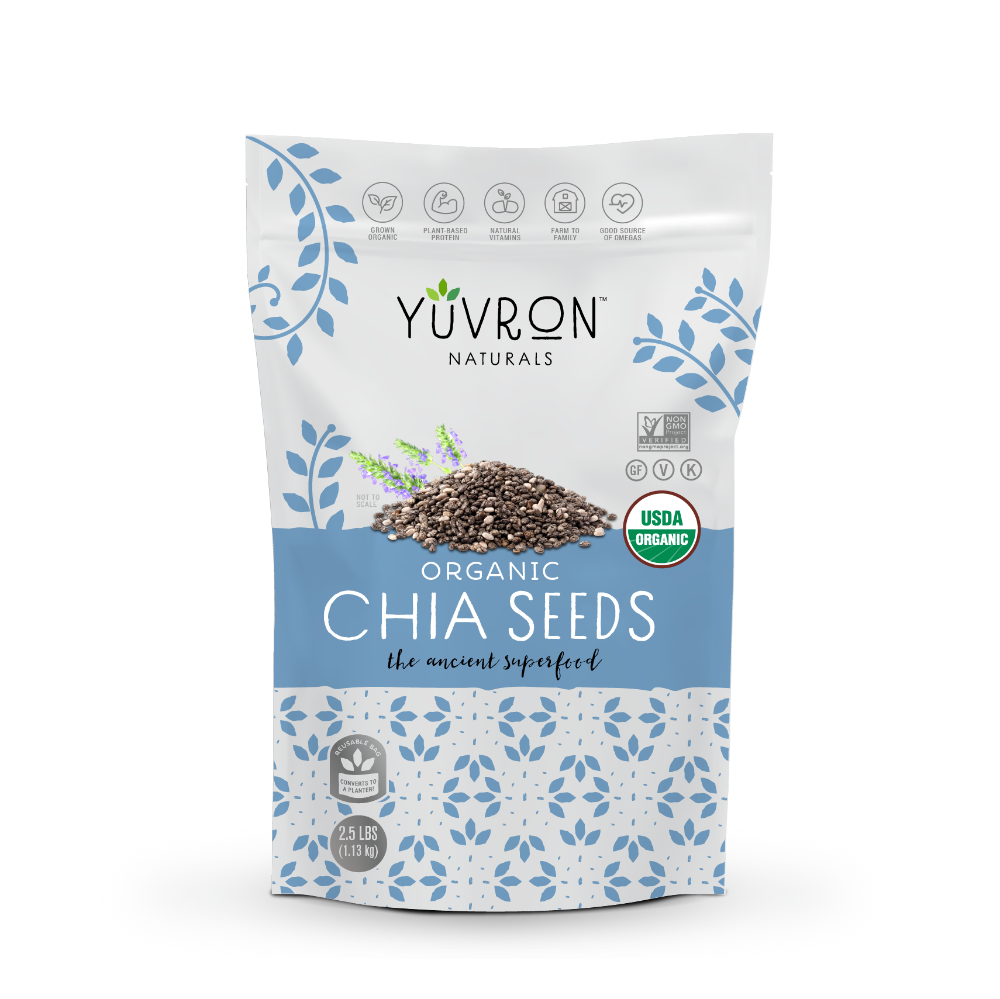
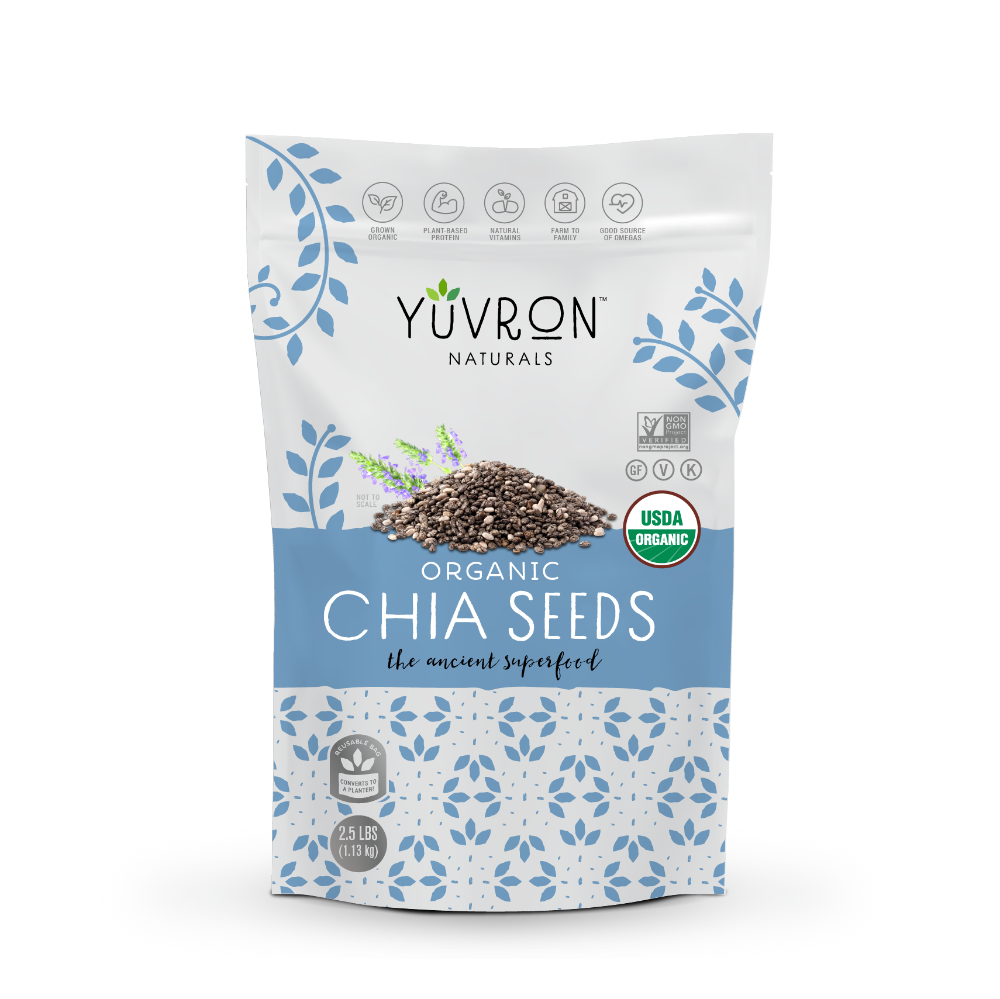

We created Yuvron wuth the goal of bringing whole, healthy foods straight from farmers to you. By cutting out distributors and resellers, we are able to bring you a fresher product at an incredible value. Why? Because we believe that little, every day choices can make a big difference in people's lives and in our planet.
 ABOUT US
ABOUT US
 

 SHOP NOW
SHOP NOW